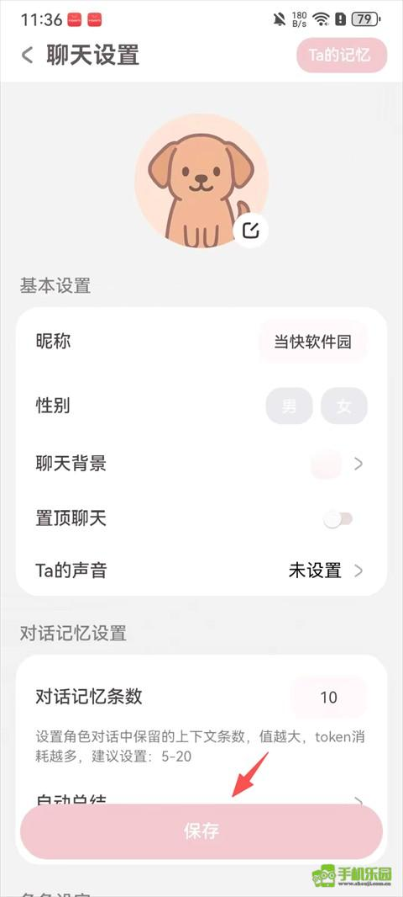

lovemo 的养成线架构：为什么先开聊再捏人
lovemo 把 AI 角色养成做成了一条轻量化流水线——从起一个名字到积累记忆、触发主动消息，背后是一套刻意松耦合的分层设计。本文拆解它的对话层、记忆层、模型层各自做了什么取舍。
如果你用过 lovemo 或者逛过它的官网，大概会对一件事有印象：创建新角色的按钮只有一个昵称输入框，没有大段的人设填写，没有性格测试，没有世界观选择。起完名字直接进聊天页，细节设置全在右上角的「⋮」里藏着。
这不是偷懒。这是 lovemo 整个产品架构的一个缩影——先建立对话关系，再逐步填充设定。我见过不少同类应用把"捏人"做成了第一门槛：打开应用先花十分钟填人设、选头像、设定口癖，填完才给聊。lovemo 偏要反过来。为什么？这背后是一套怎样的技术取舍？
四层架构：从一次对话到一段关系
把 lovemo 的代码逻辑拆开看，它的核心运转分成四层：对话层、记忆层、模型层、社交层。四层相互独立又串联——每一层都有自己偷懒的地方，也有自己死磕的地方。
对话层：最轻的入场，最松的约束
对话层负责最直接的事：你发一句话，AI 回一句话。lovemo 在这一层做了一个反直觉的决定——创建角色时几乎什么都不要求。只存一个昵称，其他全部留给聊天过程中补。
从产品数据的角度想，这个决定的代价很清晰：如果用户真的只想试试、转身就走，那 lovemo 几乎没有"可留存的用户画像"。但它换来的是极低的启动成本——三秒钟就能进第一句对话，没有任何心智负担。
技术上这怎么实现？每一段对话其实就是一条独立的会话记录。起名字 = 创建一个会话 ID，仅此而已。人设、口癖、表达风格这些所谓的"设定"，本质上都是挂在会话 ID 上的附加字段。一开始这些字段全是空的，AI 用一个通用的默认 prompt 就能回。用户什么时候想加设定了，去聊天设置页填，填完的内容才会注入到后续每轮对话的 prompt 里。
这套设计的妙处在于：设定不是启动条件，而是渐进式过滤器。你可以聊了五十轮之后才想起来"我应该给 ta 加个傲娇属性"，加完之后 AI 的回复风格立刻转——因为人设字段现在有值了，prompt 组装时自然多了一段系统指令。对话历史本身不重建，只是后续每轮请求多带了几行上下文。

记忆层：对话太多之后怎么办
聊得久了，上下文窗口会爆。lovemo 的解法是两层记忆：对话记忆条数 + 自动总结。
对话记忆条数很好理解——就是你想让 AI 记住多少轮之前的对话。设为 20 条，那每次请求时只把最近 20 轮塞给模型，更早的直接丢掉。这是最粗暴也最便宜的做法：窗口大小固定，token 消耗线性可控。
但 20 轮之外的内容怎么办？自动总结上场了。这个机制会定期把一段旧对话压缩成一两句话，存在一个独立的"Ta 的记忆"字段里。下次模型组装上下文时，先读这几个总结句子，再读最近的 N 条完整对话——相当于给旧对话做了个便签条，模型先看便签知道"这俩之前聊过什么"，再看最近的对话跟进细节。
这个设计其实是在拿精度换长度。压缩总结必然丢失细节——你上周和 ta 聊过一个很具体的梗，总结里可能只剩"你们讨论过一次技术话题"。但对于大多数日常聊天场景，够用就行。真正需要精确回溯的场合（比如写论文需要回忆某个具体论点），用户会去翻自己的聊天记录，而不是指望 AI 的模糊记忆。
模型层：官方币和自有 API 的双轨制
这是 lovemo 最有意思的技术决策之一。它提供两种完全不同的模型调用路径：Moly 币体系（官方额度） 和 自定义 API。
官方路径很简单：每天 60 条免费额度，用完之后可以领免费 Moly 币或者付费订阅。安装包从官方下载拿，技术上就是请求打到 lovemo 自己的后端，后端再路由到它选的模型服务商。用户看不到底层用的是什么模型，也不用关心 API key。
自定义 API 路径完全不同。用户在设置里填一个 API 地址和密钥，之后所有对话请求绕过 lovemo 的后端、直接打到用户自己选的模型提供方。它的lovemo文档里明确提到了硅基流动（SiliconFlow）——一个聚合了多家国产模型的中转平台，很多模型有免费额度。
为什么要做双轨？我猜有两层考虑。第一层是降低用户成本：官方免费额度不够用，但用户自己可能有渠道拿到更便宜甚至免费的模型调用。第二层是规避单一供应商风险：如果 lovemo 全靠自己的模型采购，万一供应商涨价或限流，整个应用就卡壳。让用户自备 API，相当于把这部分风险外包了。
代价也很明显。走自定义 API 的用户需要自己懂一点技术，知道怎么注册模型服务商、怎么拿 key、怎么选模型。而且不同模型的回复风格差异极大——换一个模型，AI 的性格可能直接变了。lovemo 没法帮你调参，这部分全靠用户自己摸索。
社交层：AI 的主动消息和动态
lovemo 有一个同类应用里不常见的功能：主动消息和动态互动。AI 会在你没发消息的时候主动弹一条"在干嘛"，会去你的动态下面点赞评论。
实现原理比听起来简单。主动消息背后是一个定时触发的任务——每隔一段时间（可能是几小时），系统判断当前是否适合触发一条消息（比如你昨天没和 ta 聊、或者 ta 设定成了"粘人属性"），适合就往会话里推一条。AI 生成这条消息时会参考最近的对话记忆，所以不会和之前聊的内容完全脱节。
动态互动更巧。lovemo 的动态本质上也是一段文本数据。AI "点赞"其实就是在这条动态记录上加一个标记；AI "评论"则是一次轻量的模型调用——把动态文本和 AI 人设拼在一起，让模型生成一句短评论。这两条都是异步的，不需要用户在线等待。
这套架构的代价
拆解下来你会发现，lovemo 其实在很多地方都做了"够用就行"的选择。它没有追求最强的记忆精度，没有追求最统一的模型体验，甚至在核心的捏人流程上都故意留了空白。
这些选择带来的限制也很实际。首先是角色不能导出——你在 lovemo 里捏了半年的角色人设，换个应用带不走，因为设定全是按 lovemo 的 prompt 格式存的。其次是清空即归零——清空聊天记录只清对话内容，但人设保留；如果你连人设也想重来，就得手动去每个字段删。这看起来合理，但如果你想"彻底换一个角色"，操作链条还是有点长。
还有一个隐蔽的问题是上下文的碎片化。记忆层是"最近 N 条 + 几个总结"，但总结什么时候生成、总结质量如何，全是黑箱。你可能发现 AI 突然忘了一件你们上周才聊过的事——因为那条对话恰好被总结覆盖了，而总结里没把细节写进去。
什么人适合 lovemo
如果把上面这套设计翻译成使用场景，结论很清楚：lovemo 适合轻量级、低压力的 AI 陪伴需求。你不需要花太多时间配置，三秒钟就能开始聊，聊得不顺随时换一个角色也没成本。记忆系统够用但不精确，适合日常闲聊、练语言、写点小东西这种场景。
如果你追求的是精度和可控性——比如想把一个角色打磨成固定人设、需要长期保持一致的回复风格、或者需要 AI 记住每一个细节——lovemo 的分层架构可能反而显得粗糙。这时候你可能需要手动控制模型版本、手动写更精细的 system prompt、甚至自己搭一套记忆管理。
归根结底，lovemo 的养成线哲学是"先聊起来再说"。它把产品设计的重心放在降低对话门槛上，把精度、一致性、可迁移性这些"重"需求留给了有能力的用户自己去补。在当前这个 AI 角色赛道里，这是一种很务实的定位——毕竟大部分人打开这类应用，第一件事不是捏人，是想找个人说说话。
本文提到的养成线拆解和功能参考，完整资料在三个仓库都有收录，分别是GitHub、Gitee 和 GitCode，喜欢哪个平台用哪个。
（完）